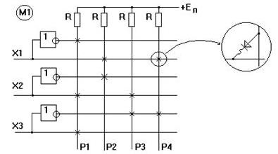
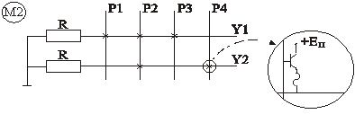
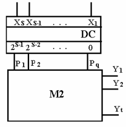
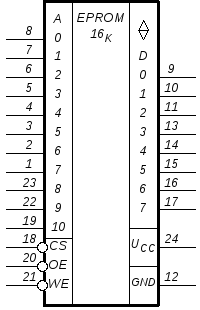
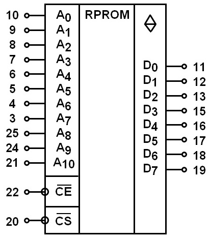

Программируемые логические матричные структуры
Реализация Булевых функций с помощью матричных схем
Матричные схемы представляют собой сетку ортогональных проводников, на местах пересечения которых установлены элементы односторонней проводимости (ЭОП) (диоды, транзисторы). Матричные схемы бывают 2-х и 3-х уровневые. Каждый уровень называется матрицей. Матрица первого уровня называется матрицей М1, матрица второго уровня - М2.
Обычно матрица М1 реализует элементарные конъюнкции и называется матрицей конъюнкций, а матрица М2 - матрицей дизъюнкций, т.к. позволяет реализовать дизъюнкции переменных.
Рассмотрим двухуровневую матричную схему (рис. 1).
Рис. 1 - Функциональная схема матрицы М1:S=3;q=4
Количество входов матрицы М1 равно S, т.е. Х1, Х2, ... , Xs, количество выходов матрицы М2 равно t, т.е. Y1, Y2, . . , Yt. Буквой Р обозначаются промежуточные проводники, перпендикулярные (ортогональные) проводникам Х и У. Количество ортогональных проводников равно q.
Функциональная схема матрицы М1 представлена на рис. 2.27. Рассматриваемая матрица может реализовать четыре конъюнкции, по числу ортогональных проводников:
Р1 = Х3 Х2 Х1; P2 =Х2X1; P3 = Х3 X2; P4 =Х2Х1.
В общем случае, если какие-либо ортогональные проводники не участвуют в реализации конъюнкций, их число может быть меньше q.

Рис. 2 - Функциональная схема матрицы М1: S=3;q=4
Реализация необходимых конъюнкций осуществляется путем прожига перемычек (включенных последовательно с полупроводниковым диодом), расположенных на местах пересечения ортогональных проводников, не участвующих в образовании конъюнкций.
Следует отметить, что в исходном состоянии на всех пересечениях проводников матрицы М1 имеются соединения, т.е. матрица реализует все конъюнкции переменных, причем в каждую конъюнкцию входят все переменные и с отрицанием, и без. Очевидно, что такие конъюнкции логического смысла не имеют. Для получения необходимых конъюнкций следует прожигать все легкоплавкие перемычки, находящиеся на узлах, не участвующих в конъюнкциях. На схеме (рис. 2) рассматриваемой матрицы М1 крестиками обозначены узлы, на которых сохранены перемычки.
Рассмотрим процесс реализации конъюнкции на примере P1 = Х3Х2Х1. Действительно, на проводнике P1 будет поддерживаться уровень логической единицы (за счет напряжения источника питания E) только при условии наличия уровня логической "1" на всех трех указанных пересечениях. Очевидно, что на верхнем (по схеме) пересечении уровень "1" будет иметь место только при условии подачи на вход матрицы уровня логического "0", т.к. сигнал Х1 "попадает" на это пересечение через инвертор. Появление "0" хотя бы на одном из входов Х3 или Х2 приводит к "исчезновению" логической "1" на проводе P1, т.к. все напряжение питания Е будет падать на ограничительном сопротивлении R и на выходе Р1 появится "0".
Схема матрицы дизъюнкции М2 содержит сопротивления нагрузки и транзисторные ключевые соединители (на местах пересечений ортогональных проводников). На рис. 3 приведена схема матрицы М2 для двух выходов ( количество проводников Р одинаково для М1 и М2 и в данном примере q = 4).

Рис. 3 - Матрица дизъюнкций М2
Матрица М2, приведенная на рис.1, реализует две дизъюнкции:
Объем информации, который можно записать в матричную схему, определяется как информационная площадь матриц, вернее суммой Sm1 и Sm2.
Sm= Sm1 +Sm2 = 2Sq + qt.
На практике часто встречаются схемы, состоящие из матриц М2 и дешифратора (полного). Такие схемы обычно называют постоянными запоминающими устройствами (ПЗУ). ПЗУ - это элемент (устройство) памяти, позволяющий хранить записанную в нем информацию, и после выключения напряжения источника питания. По способу записи ПЗУ подразделяются на масочные, программируемые и репрограммируемые. Масочные ПЗУ программируются заводом изготовителем с помощью специальных масок, т.е. соединения на местах пересечения ортогональных проводников заложены в технологию производства ПЗУ.
Программируемые ПЗУ (ППЗУ). ППЗУ выпускаются заводом-изготовителем в "чистом виде", т.е. по всем адресам записаны "0". Программирование ППЗУ осуществляется пользователем ППЗУ на специальной установке, называемой программатором. В ППЗУ можно записать (его программировать) информацию только один раз. Изменить записанную информацию или исправить ее нельзя. ППЗУ нашли широкое применение в ЭВМ для хранения запускающих программ. Они обладают большим быстродействием, чем репрограммируемые ПЗУ (РПЗУ).
Репрограммируемые ПЗУ позволяют, при необходимости, перепрограммировать ПЗУ, т.е. стереть ранее записанную информацию и записать новую.
По способу стирания ранее записанной информации РПЗУ бывают с ультрафиолетовым (ультрафиолетовыми лучами) и электрическим стиранием. РПЗУ позволяют десятки (некоторые до 1000) раз перепрограммировать и сохранять записанную информацию десятки и сотни тысяч часов. Быстродействие РПЗУ несколько хуже быстродействия ППЗУ.
Независимо от типа и способа стирания ПЗУ имеют структуру, приведенную на рис. 4.

Рис 4 - Структурная схема постоянного запоминающего устройства
Структурная схема ПЗУ содержит дешифратор на S входов и 2S выходов, а также матрицу М2.
Информационная емкость ПЗУ определяется как Sпзу = 2S, где S- количество входов X. В этом определении емкости (объема) памяти не учтено количество выходов Y(t). Обычно число t бывает 4, 8, и 16 (полубайтовая, байтовая и двухбайтовая организация памяти). "Битовая" емкость ПЗУ определяется как
Sпзу (бит) = 2St (бит).
На функциональных и принципиальных схемах РПЗУ с ультрафиолетовым стиранием изображается так, как показано на рис. 5.


Рис.5. Схемное обозначение РПЗУ К573РФ2 и К573РФ5 с ультрафиолетовым стиранием:
А - адресные входы;
D – информационные выходы.
Uce – вход подачи напряжения записи (в режиме хранения на этот вход подается Ucc);
Ucc – вывод для подачи напряжения питания.
СЕ и ОЕ – входы управления состоянием выводов, если СЕ=ОЕ=1, входы D имеют высокоимпедансное состояние. При СЕ=ОЕ=0 вывод информации разрешен.
Микросхема РПЗУ К573РФ2 (РФ5) имеет одиннадцатиразрядный дешифратор, выходы которого соединены с восьмиразрядной матрицей М2. В процессе записи выходные элементы РПЗУ находятся в режиме приема информации через выводы D0 . . . D7 (на входе “ОЕ“ уровень “1”). В режиме считывания записанной информации выводы “Uce” и “Ucc” объединяются, и на них подается напряжение питания +5В.
Источники
studopedia.ru - Программируемые логические матричные структуры